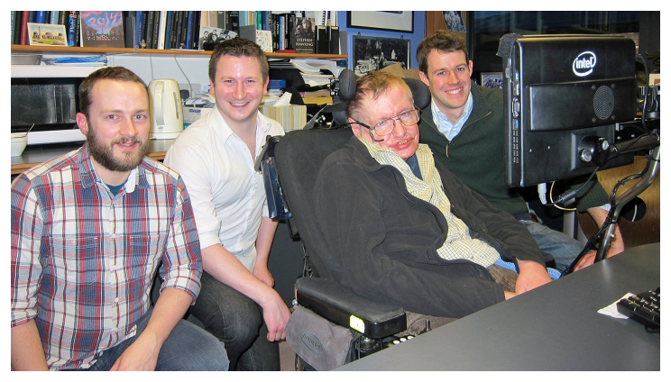
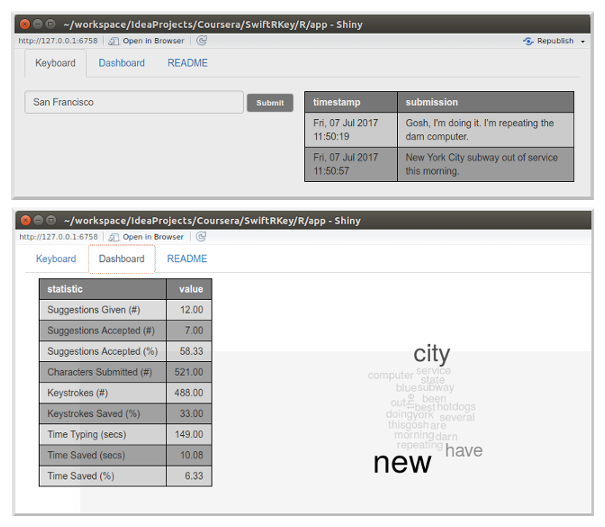

SwitftRKey
A Typing Prediction App Written in R

By Marcio Gualtieri
July 24, 2017
Why Is Text Typing Prediction Useful?

The continued affordability and popularity of smart phones and other mobile devices pushed the advent of keyboard typing prediction.
Mobile devices are in general too small to fit a confortable size keyboard, making typing unpleasant.
This technology goes beyond providing a product to sell though: Professor Hawking's medical condition, amyotrophic lateral sclerosis (ALS), makes text prediction critical to improve his daily live.
A truly noble and remarkable use of technology which can have a positive impact in the lives of many other people with disabilities.
How Does the Prediction Model Work?
The model is represented by a Markov transition matrix, where each cell contains the probability of a word given a history of words. The model has been encapsulated inside a package named swiftrkey together with the necessary supporting code:
suppressMessages(library(swiftrkey))
model[10:12, 1:3]
## <unknown> s said
## s <unknown> 1.0000000 0.086842105 0.037463482
## time 0.5070423 0.004030154 0.001649295
## u 0.2142857 1.000000000 0.001649295
Above, a partial view of the transition matrix's content. Each cell represents the probability of a word (each column) given a certain history of words (each row). For instance, given the row (history) "time", there is a 0.004030154 probability that the next word is "s".
Note that the history could be empty (first row) and that our model supports unknown words. Any word that isn't present in the model is treated as it was "<unknown>".
The probabilities have been calculated using Katz's Backoff. For more details refer to the R notebook.
You may easily deploy the model to your Shiny application or notebook by loading the library, and get suggestions by using the included supporting code:
suggestions(model, "new", n = 2, with_probabilities = TRUE)
## $`0.579710144927536`
## [1] "york"
##
## $`0.247427011132115`
## [1] "jersey"
For more details refer to the R package project.
The SwiftRKey App
The app (developed with the Shiny Framework) is comprised of a keyboard and a dashboard with statistics on the app's usage.

The metrics include measurements such as keystrokes saved by accepting suggestions, time saved not typing, a frequency barplot and a word cloud diagram to show the most popular words typed so far.
The app illustrates how the text prediction model can be easily incorporated into a useful app.
You will find more details in the app's documentation and you may also demo the app here.